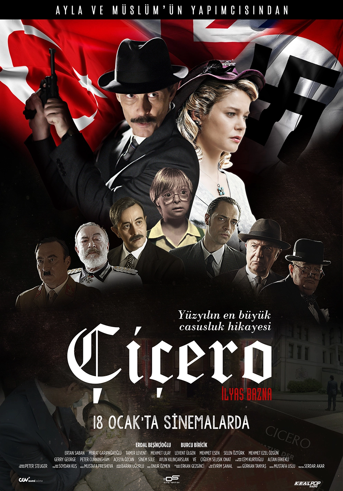
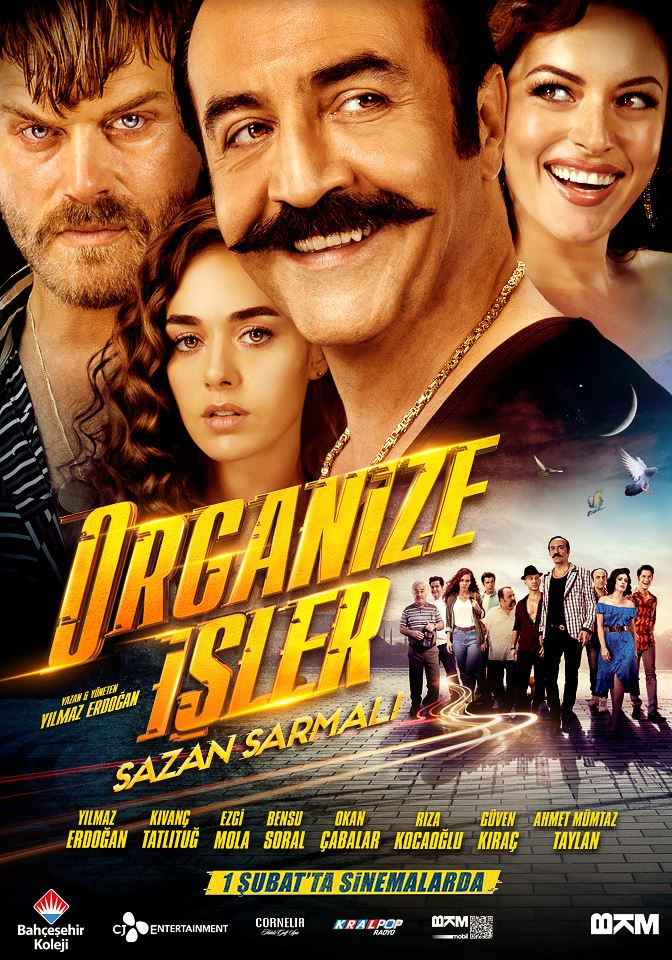
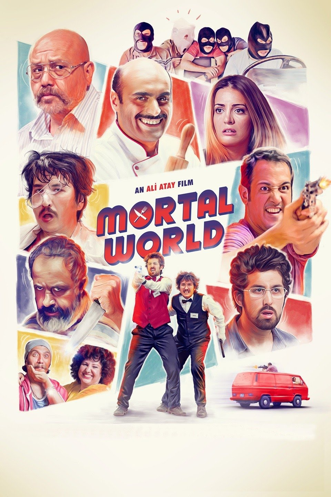

THE DOMESTIC ACTION MOVIES THAT I RECOMMEND TO YOU

Cicero(2019)
Cicero is a 2019 biographical drama film directed by Serdar Akar. II. The film tells the story of the life of an Albanian spy named Elyesa Bazna, who was spying for Nazi Germany before World War II and was known by the nickname "Cicero", and stars Erdal Beşikçioğlu in the title role.
Stars: Erdal Beşikçioğlu / İlyas Bazna --- Burcu Biricik / Cornelia Kapp --- Murat Garipağaoğlu / Moyzisch
IMDB Rating: 6.5/10

Organize İşler 2 : Sazan Sarmalı(2019)
Asim Noyan has been deceiving people for years with the lies he has told and the games he has translated. Asim Noyan and his gang, whom no one has managed to catch, are infected with a trio of papers. When Nazli, the only daughter of the king of fraudsters, is scammed, Asim Noyan and his team immediately take action. Nazli suddenly finds herself in a carp spiral.
AA civil war has been raging for 7 years in one of the most dangerous regions of the world. The Turkish army enters the region without any allied states besides it. There is also a 6-person Special Forces team under the command of Captain Alparslan among the decommissioned officers in the region. Tim, along with Captain Pilot Onur, who joins them, uncovers a big decoy set against the Turkish army. The main test for Tim, who is fighting for his life against terrorists for the sake of his homeland in difficult conditions in order to break the trap, is to be able to remain human without losing his conscience.
Stars: Kerem Bürsin / Captain Pilot Onur Keskin --- Burak Özçivit / Captain Alparslan --- Melike İpek Yalova / Doctor Seher
IMDB Rating: 5.5/10

Ölümlü Dünya(2018)
Is a Turkish action/comedy film about the funny events when a family that handles the affairs of an international criminal gang for rent in Turkey runs afoul of the same criminal gang and runs away from them.
Stars: Ahmet Mümtaz Taylan / Gazanfer --- Doğu Demirkol / Zafer --- Alper Kul / Oktay --- Sarp Apak / Serhan --- İrem Sak / Begüm --- Meltem Kaptan / Sevil --- Mehmet Özgür / Ilhami